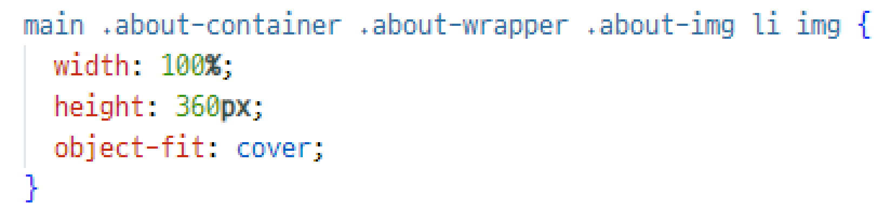
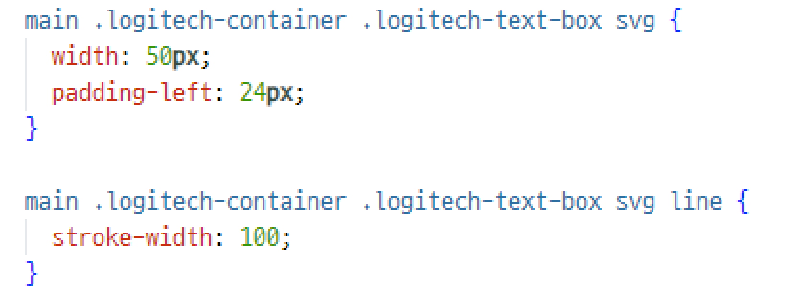

video 영역
2024.06.20 ~ 2024.06.24
LOGITECH
반응형 웹 리디자인 & 퍼블리싱
개인 프로젝트
- # JavaScript
- # jQuery
- # FIGMA
- # MediaQuery
Situation
- 세부 페이지가 너무 많아 기업에 대한 정보를 한눈에 확인하기 어려움
- 한글 번역이 제대로 이루어지지 않아 문장이 부자연스러움
Task
- 반응형 웹 구현을 통해 반응형 웹 작업에 대한 이해를 높임
- 한 페이지 안에 기업에 대한 정보를 담아 한눈에 확인하기 쉽도록 함
- 문장을 자연스럽게 다듬어 전달력을 높임
Style Guide
KEYWORD
- # 심플한
- # 직관적인
- # 현대적인
COLOR
- BLACK
- GRAY
- WHITE
- #4682B4
- 무채색 컬러를 사용하여 고급스럽고 현대적인 느낌을 살렸습니다.
- 로고 컬러를 포인트 컬러로 사용하여 브랜드 아이덴티티를 살리고 단조로움을 방지하였습니다.
FONTS
- 메인 폰트
- 프리텐다드 Semibold
- 프리텐다드 Medium
- 프리텐다드 Regular
- 프리텐다드 Light
- 서브 폰트
- 에스코어드림 Medium
- 에스코어드림 Regular
Issue & Resolving
1. about-wrapper의 이미지가 그리드를 가득 채우지 않고 여백이 생기는데 어떻게 해야 할까?
→ 모바일과 PC 버전의 이미지 세로 값이 동일하기 때문에 height에 고정값을 줘서 해결함
2. svg의 width값을 줄이면 선이 얇고 연해지는데 어떻게 해야 할까?
→ svg line의 stroke-width 코드로 선의 두께를
Review
✓ 아쉬움
- 로지텍 홈페이지에 있는 일러스트를 사용하고 싶었습니다. 그러나 해당 이미지가 포토샵 및 일러스트 프로그램에서 열리지 않아 다른 아이콘으로 대체하여 사용한 부분이 아쉬웠습니다.
✓ 성과
- 처음 기획한 디자인대로 결과물을 완성하고, 어느 디바이스 사이즈에서도 어색하지 않은 반응형 웹사이트를 구현해 뿌듯했습니다.
- 무한 롤링 이미지 부분을 marquee.js 플러그인 대신 css와 javaScript만으로 구현했습니다. 덕분에 javaScript 능력을 향상시킬 수 있었습니다.
✓ 배운 점
이번 프로젝트를 진행하면서 column-gap, row-gap 코드에 대해 새롭게 알게 되었습니다. 덕분에 그리드를 활용할 때 다양한 스타일을 더욱 쉽게 구현할 수 있게 되었습니다.
또한, javaScript의 cloneNode 매서드에 대해 새롭게 알게 되었습니다. cloneNode 매서드를 이용하면 직접 구조를 추가하지 않고도 필요한 요솔르 복제할 수 있음을 알게 되었습니다. 다음에도 cloneNode 매서드를 이용해 효율적으로 작업하고 싶습니다.
이번 프로젝트에서는 이전과는 다른 스타일의 웹사이트를 구현하고자 했습니다. 일상에서 자주 볼 수 있는 간결하고 직관적인 디자인을 추구했습니다. 하지만 이 과정에서 다양한 플러그인을 사용하지 못했던 점이 아쉬웠습니다. 다음에는 다양한 플러그인을 활용해 사용자의 시선을 사로잡을 수 있는 반응형 웹사이트를 구현하고 싶습니다.